Контекст
Нужно оформить форму для сбора контактной информации пользователей, которые хотят подписаться на рассылку новостей конкретного департамента.

Форма для сбора контактной информации
Это мое тестовое задание в ДИТ Правительства Москвы.
Нужно оформить форму для сбора контактной информации пользователей, которые хотят подписаться на рассылку новостей конкретного департамента.
Спроектировать удобную и понятную форму подписки, содержащую поля:
Учитывая задачу проекта, логично предположить, что форма будет использоваться на сайте Правительства Москвы, в состав которого входят департаменты. Поэтому первым делом я изучил сайт и существующие формы.
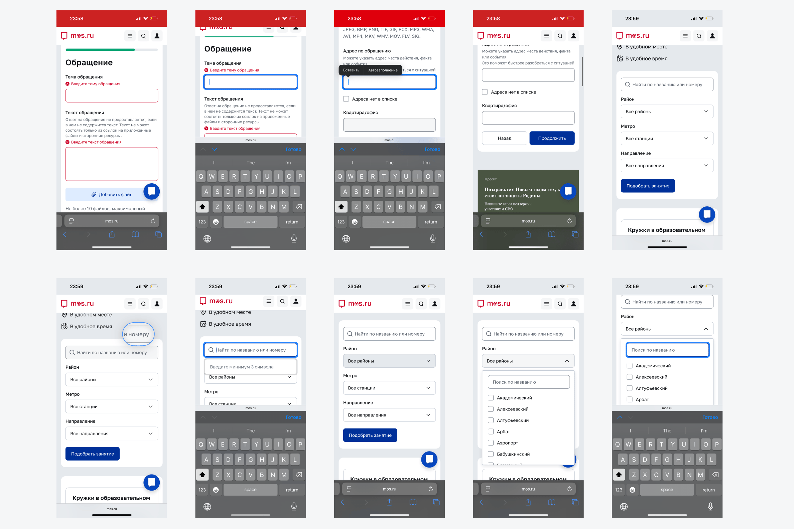
Во время изучения mos.ru мне не удалось посмотреть, как в формах работают поля для ввода личных данных, потому что они заполнялись автоматически. Поэтому я дополнительно изучил, как с такими задачами справляются другие сервисы и дизайнеры.
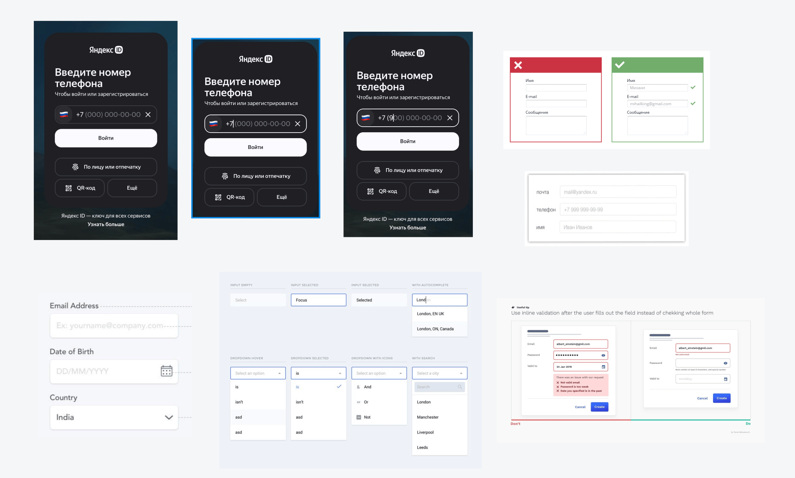
При проектировании я опирался на 3 ключевых принципа: простота, предсказуемость и масштабируемость решения.
Использовал Golos Text (SemiBold, Medium, Regular). Для удобства сохранил все вариации в стили и разделил их на 3 группы: Mobile, Desktop и MultyPlatform.
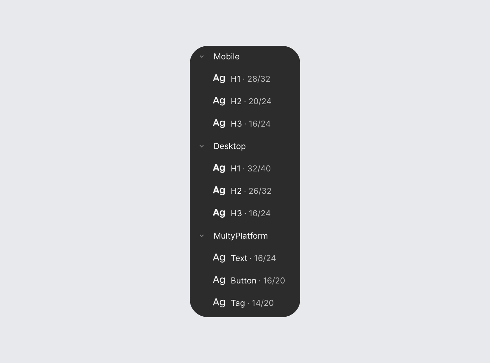
При проектировании воспользовался Variables. Этот подход позволяет управлять цветами по смыслу, а не по значению и упрощает масштабирование и поддержку интерфейса.
Базовые значения цветов сохранил в Primitives, а в Tokens использовал семантические названия и ссылался на Primitives.
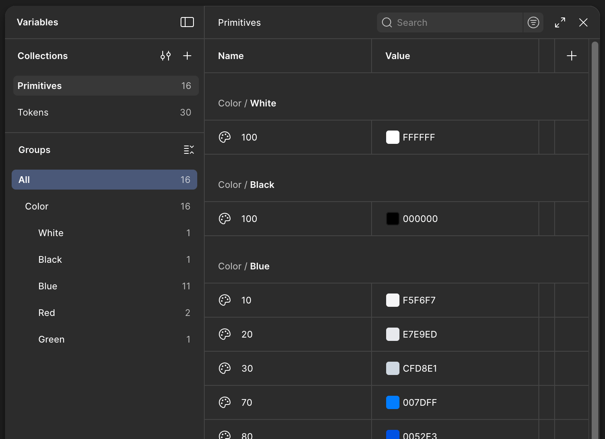
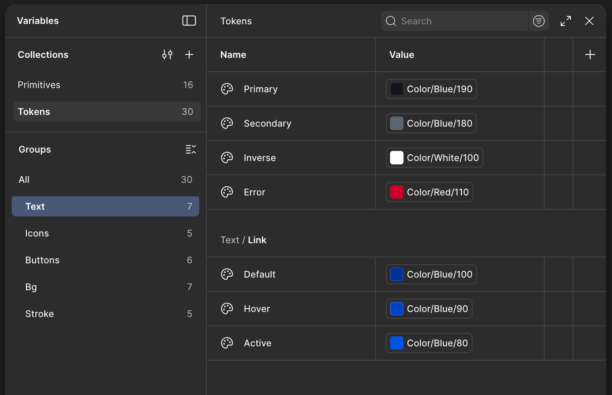
Компонентная система построена по принципу постепенного усложнения и разделена на три группы:
Такой подход позволяет переиспользовать элементы и масштабировать систему под новые задачи и сервисы.
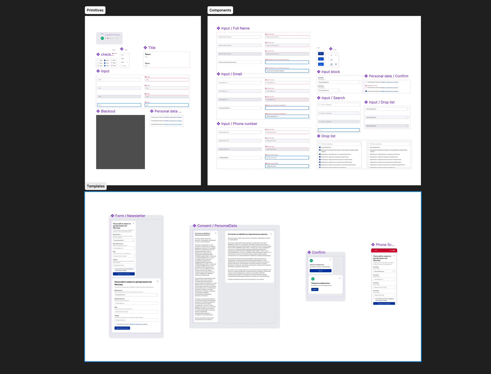
Поле выбора департаментов вынесено в начало формы, чтобы пользователь сразу понимал контекст подписки и только после этого вводил персональные данные.
Далее идут контактные данные:
Чекбокс согласия размещен перед кнопкой отправки как привычный и ожидаемый паттерн для форм с персональными данными.
Также добавлен шаг подтверждения подписки: это снижает неопределенность и дает уверенность, что действие выполнено успешно.
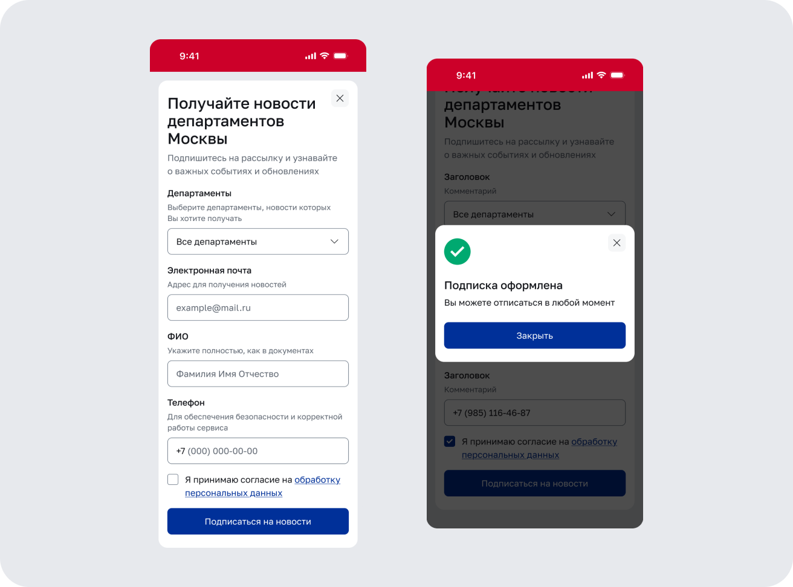
Форма спроектирована с учетом ключевых состояний:
Ошибки показываются локально над конкретным полем, адаптируются под контекст и обозначаются сразу.
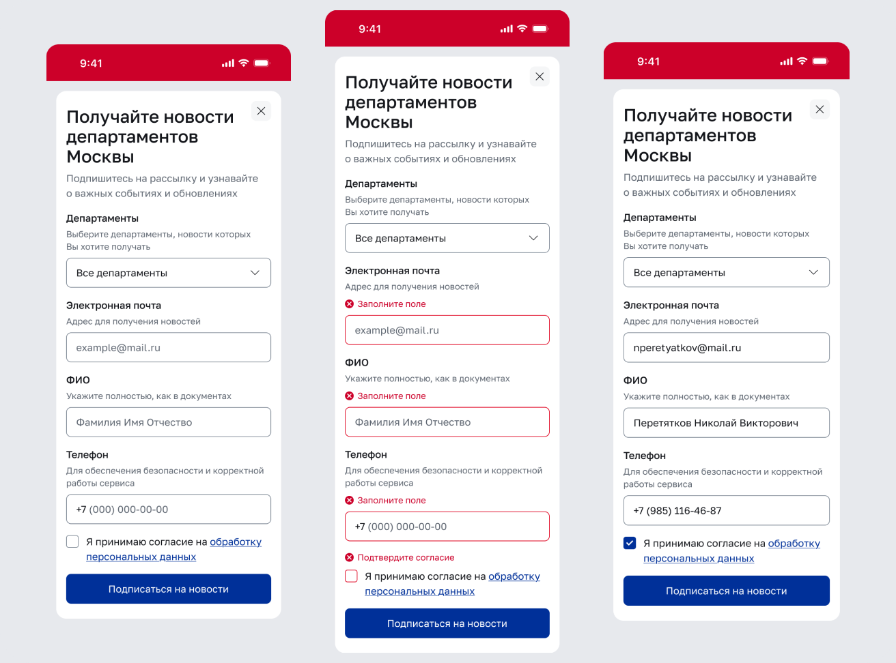
Реализовано через выпадающий список с чекбоксами и строкой поиска. Есть чекбокс для быстрого выделения и снятия выбора со всех пунктов. По умолчанию выбран вариант «Все департаменты», чтобы исключить незаполненное поле и сократить количество действий.
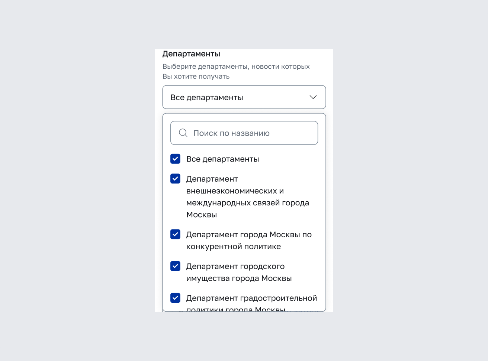
Изначально в полях установлены плейсхолдеры, которые помогают понять формат ввода. После начала ввода над полем появляется подсказка, чтобы требования оставались видимыми.
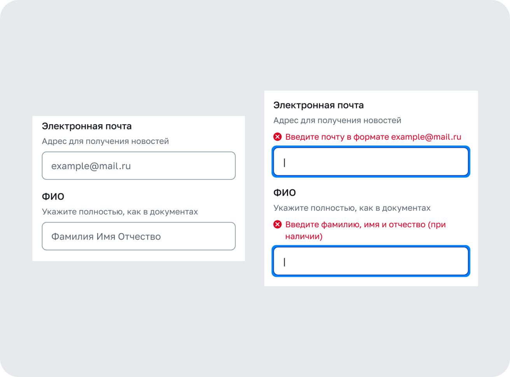
Используется маска ввода номера телефона: это сокращает количество ошибок, облегчает заполнение и упрощает обработку данных на стороне бизнеса.
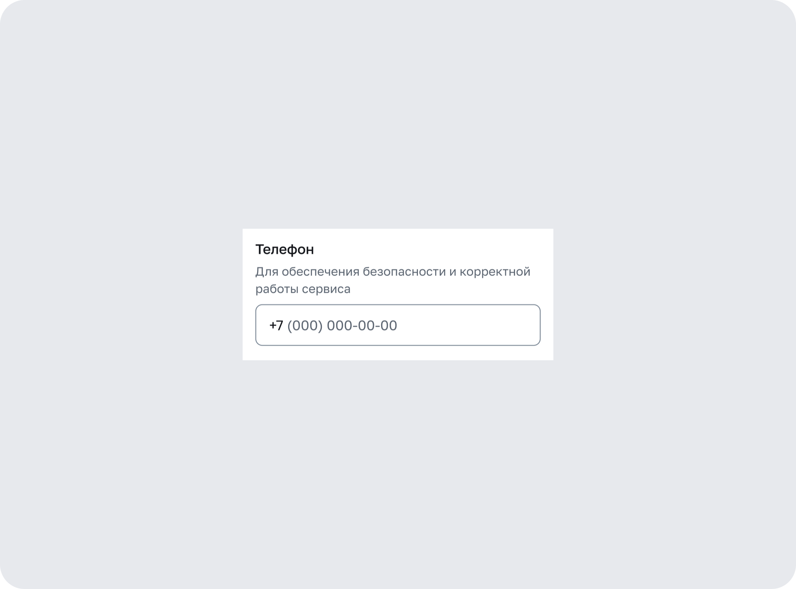
В результате получилась универсальная, простая и понятная форма подписки, которая соответствует требованиям задания и может быть легко встроена в существующую экосистему сайта Правительства Москвы.
Следующий шаг — провести UX-исследования и юзабилити тесты, чтобы проверить понятность формы, выявить ошибки и на основе данных повысить удобство и конверсию подписки.